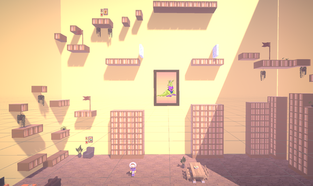
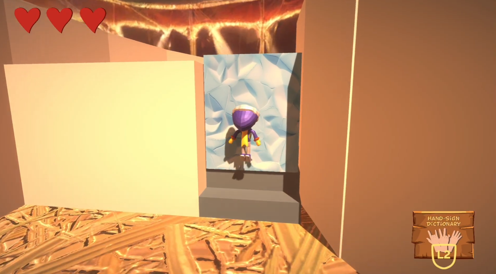
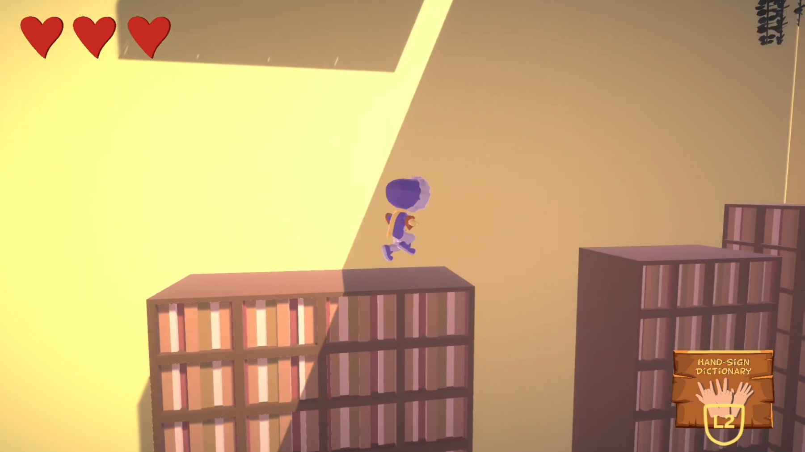
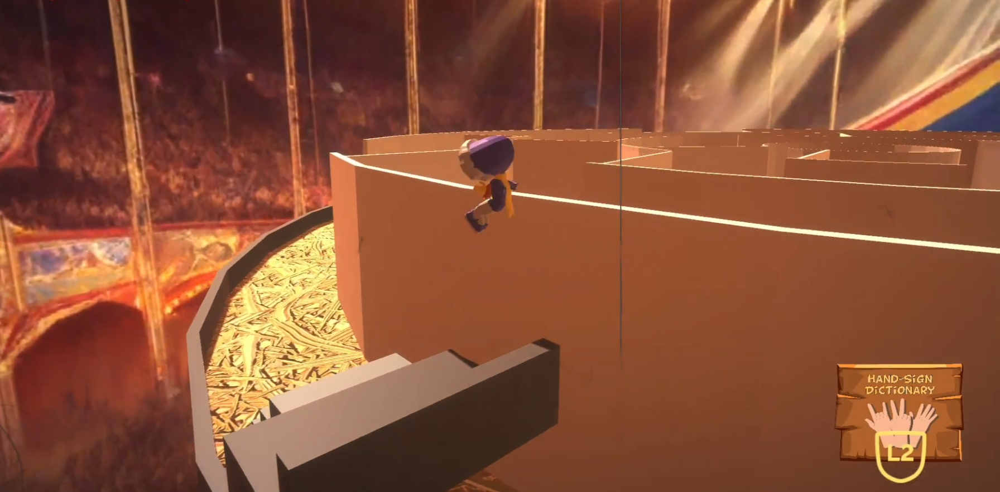
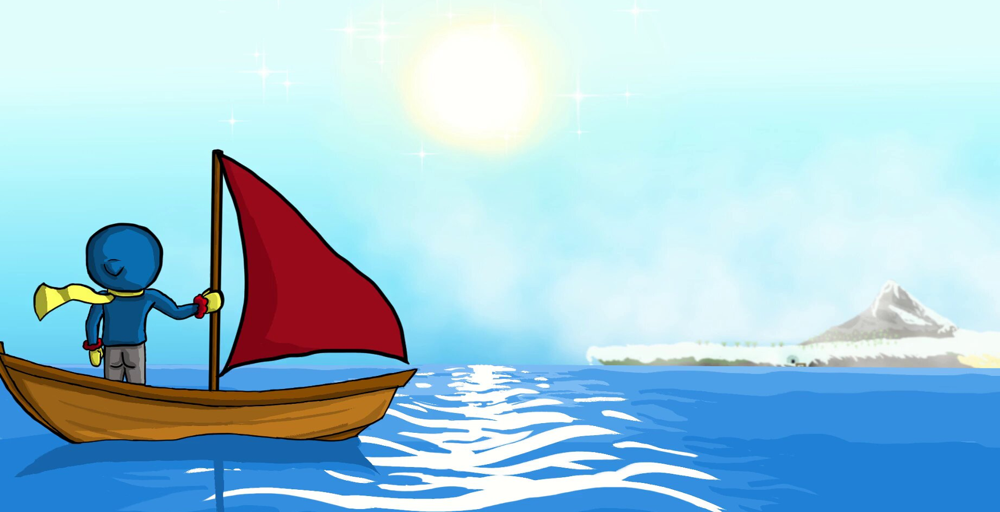
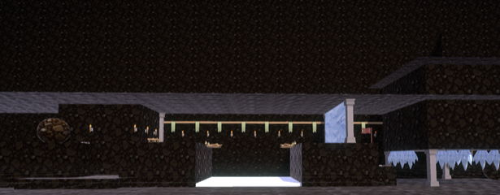

Computer vision
A camera-based system recognises hand gestures and turns them into gameplay input.
A 3D platform game combining traditional controller input with camera-based hand-gesture recognition, using hand gestures to control different gameplay abilities.
Nico Nitro is a 3D platform game developed as a Visual Computing project. The game explores how hand recognition can be used as an alternative form of game input.
Players guide Nico through a frozen island across four levels. Traditional controls are used for movement, while hand gestures trigger special abilities such as double jump, dash and smash.
A camera-based system recognises hand gestures and turns them into gameplay input.
Controller or keyboard input handles movement while gestures control special abilities.
A stylised frozen island provides the setting for the platforming challenges.
The game gradually introduces its mechanics and abilities across four playable levels.


The central technical part of the project was developing a computer vision system that could recognise hand gestures through a camera and use them as real-time game input.
Python and OpenCV were used to process the camera feed. Image filtering, contour detection, convex hulls and convexity defects were used to analyse the shape of the player's hand.
The camera feed is processed to isolate and analyse the player's hand.
The shape of the hand is analysed to distinguish between different gestures.
Recognised gestures are translated into gameplay abilities while the player is playing.
The computer vision system becomes part of the game's interaction rather than a separate interface.



